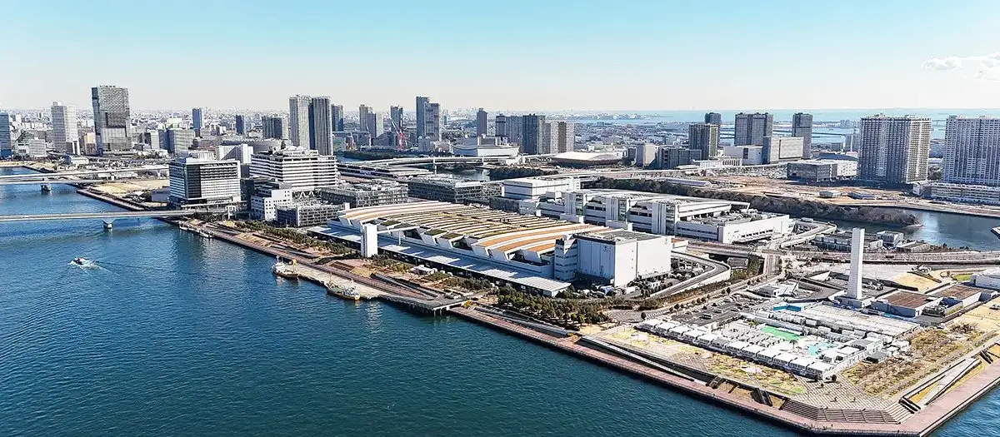
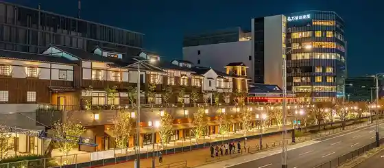
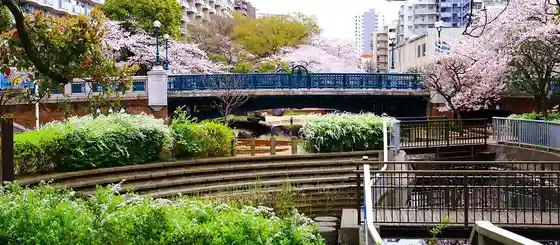
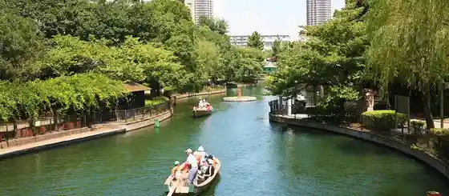

Koto, Tokyo: things to do, food and stays
Koto · Tokyo
Koto
Highlighted on the Tokyo map.

Sights
Toyosu Market
Toyosu Senkyaku Banrai

Museum of Contemporary Art Tokyo
Sendai Horikawa Park

Yokojikken River Shinsui Park

Furuishiba Kawa Shinsui Park
Chiimurabopuranettsu TOKYO DMM
Tokyo Getoburijji
Kiyosumi Garden
Abandokku Rarapoto Toyosu
Tokyo Biggusaito (Tokyokokusai Tenjijo)
Telecom Center Building Observation Deck
Tokyo Rinkai Koiki Bosai Park
Yumenoshima Tropical Greenhouse Dome
Dining
Yakiniku Sei Ryu En
焼肉 静龍苑

Meat restaurant in Koto, Tokyo.
commedia

European restaurant in Koto, Tokyo.
Watanabe Ryouri-mise
渡辺料理店

European restaurant in Koto, Tokyo.
eman

European restaurant in Koto, Tokyo.
Tsuki to Kame
月と亀

Chinese or Asian restaurant in Koto, Tokyo.
Menya Kissou
麺屋吉左右

Noodle restaurant in Koto, Tokyo.
Koukai Bou
こうかいぼう

Noodle restaurant in Koto, Tokyo.
Kameido Niboshi Chuka Soba Tsukihi
亀戸煮干中華蕎麦 つきひ

Noodle restaurant in Koto, Tokyo.
Men Fujisaki
麺 ふじさき

Noodle restaurant in Koto, Tokyo.
DURAMENTEI

Noodle restaurant in Koto, Tokyo.
Cattlea
カトレア

Sweets and bakery shop in Koto, Tokyo.
Menya Rurikakesu
麺屋 ルリカケス

Noodle restaurant in Koto, Tokyo.
Tandoor Bar Kamalpur Kiba ten
タンドールバル カマルプール 木場店

Chinese or Asian restaurant in Koto, Tokyo.
Teuchi Soba Ginnan
手打ち蕎麦 銀杏

Noodle restaurant in Koto, Tokyo.
BAR Opa Monzennakachou ten Reservation
BAR オーパ 門前仲町店

Izakaya or bar in Koto, Tokyo.
Mon Cher Touyouchou koujou
モンシェール 東陽町工場

Sweets and bakery shop in Koto, Tokyo.
Kanmidokoro Irie
いり江

Sweets and bakery shop in Koto, Tokyo.
Shinonome Noodle
しののめヌードル

Noodle restaurant in Koto, Tokyo.
O2

Chinese or Asian restaurant in Koto, Tokyo.
Raa Men Yamaguchi Ratsushiki Honten
らぁ麺やまぐち 辣式 本店

Noodle restaurant in Koto, Tokyo.
Coffee Dojo Samurai
珈琲道場 侍

Cafe in Koto, Tokyo.
Boulangerie S.Igarashi Kiba Honten
Boulangerie S.Igarashi 木場本店

Sweets and bakery shop in Koto, Tokyo.
HANAIKADA
らぁ麺 花筏

Noodle restaurant in Koto, Tokyo.
Ramen Jiro Kameido ten
ラーメン二郎 亀戸店

Noodle restaurant in Koto, Tokyo.
BLESS Reservation
BLESS

Meat restaurant in Koto, Tokyo.
yagu-noodle

Noodle restaurant in Koto, Tokyo.
Pizzeria Bella Napoli
ベッラ・ナポリ

European restaurant in Koto, Tokyo.
Tandoor Bar Kamal 2 Go
タンドールバル カマル2号

Chinese or Asian restaurant in Koto, Tokyo.
Chinese Restaurant Seika Reservation
Chinese Restaurant 晴華

Chinese or Asian restaurant in Koto, Tokyo.
Tonkatsu Odayasu Jounai ten
とんかつ小田保 場内店

Meat restaurant in Koto, Tokyo.
jiu
jiü

European restaurant in Koto, Tokyo.
Fukagawa Okina Reservation
ふかがわ翁

Noodle restaurant in Koto, Tokyo.
Risosteria Trentatre

European restaurant in Koto, Tokyo.
Shiki
麺屋 四季

Noodle restaurant in Koto, Tokyo.
Trattoria Buca Massimo
トラットリア ブカ マッシモ

European restaurant in Koto, Tokyo.
Shodai Yoshida Reservation
初代吉田

Meat restaurant in Koto, Tokyo.
Stay
L stay&grow Minamisunamachi
L stay&grow南砂町

L stay&grow Minamisunamachi is a place to stay in Koto, Tokyo.
Tokyu Sutei Monzennakamachi
東急ステイ門前仲町

東急ステイ門前仲町 is a place to stay in Koto, Tokyo.
APA Hotel & Resort <Tokyo Bay Shiomi>
アパホテル＆リゾート〈東京ベイ潮見〉

APA Hotel & Resort <Tokyo Bay Shiomi> is a resort hotel in Koto, Tokyo.
Hotel Route-Inn Grand Tokyo Toyocho
ホテルルートインGrand東京東陽町

Hotel Route-Inn Grand Tokyo Toyocho is a hotel in Koto, Tokyo.
Hotel MyStays Kameido
ホテルマイステイズ亀戸

Hotel MyStays Kameido is a hotel in Koto, Tokyo.
Villa Fontaine Grand Tokyo Ariake | Sumitomo Realty & Development
ヴィラフォンテーヌ グランド 東京有明｜住友不動産

Villa Fontaine Grand Tokyo Ariake | Sumitomo Realty & Development is a place to stay in Koto, Tokyo.
Mitsui Garden Hotel Toyosu Premier
三井ガーデンホテル豊洲プレミア

Mitsui Garden Hotel Toyosu Premier is a hotel in Koto, Tokyo.
Tokyo Bei Ariake Washington Hotel
東京ベイ有明ワシントンホテル

東京ベイ有明ワシントンホテル is a hotel in Koto, Tokyo.
hotel MONday Premium Toyosu
hotel MONday Premium 豊洲

hotel MONday Premium Toyosu is a place to stay in Koto, Tokyo.